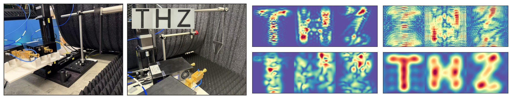

Abstract
We present Dirichlet Splatting, a physically grounded differentiable rendering method for inverse problems with wave-based coherent sensors. Unlike optical cameras, these sensors observe a scene in a band-limited Fourier space whose continuous point response is complex-valued and oscillatory. Our key observation is that the point spread function of a reflector in this Fourier space is the Dirichlet kernel, not a Gaussian. We instantiate each splat as a Dirichlet kernel in closed form, model each primitive as a planar surfel rendered through a surfel-aware Dirichlet splat whose complex amplitude is set by wave propagation physics, and introduce a sliding Frank–Wolfe adaptation tailored to the rugged, non-convex landscape that the Dirichlet oscillation induces. On terahertz tomography, Dirichlet Splatting recovers reflector geometry with an order of magnitude fewer parameters, faster convergence, and higher accuracy than 3D Gaussian Splatting.
A coherent sensor sees a Dirichlet kernel
Radar, sonar, and terahertz scanners mix each echo against the transmitted waveform, then take a finite-length DFT along every measurement axis. A point reflector at a continuous offset \(\Delta\) from a bin centre therefore shows up as the exact Dirichlet kernel
where \(N\) is the number of samples the hardware integrates before the transform. The kernel is complex, oscillates, and repeats. Its sidelobes hold about 10% of the energy, and both their level and their phase are fixed by \(N\), so nothing needs fitting. A Gaussian splat decays monotonically and never crosses zero, so it reproduces neither the sidelobes nor the phase that decides how nearby reflectors interfere.
Slide the reflector between two bins. At an integer offset, every recorded sample except the peak lands on a null and the sidelobes vanish from the data. At a half-bin offset they all appear. Dots are the values the sensor records, coloured by phase; the steady colour ramp is the kernel's linear phase law.
- Dirichlet kernel
- Gaussian with the same main lobe
- Recorded bins, coloured by phase
- Recorded energy outside the main lobe, Dirichlet
- –
- Same for the Gaussian
- –
- Brightest recorded sample
- –
Reflectors interfere before the detector squares
Each surfel contributes one complex splat, and the renderer adds them: \(\hat Y(\mathbf f) = \sum_i \mathrm{splat}_i(\mathbf f)\), with observed power \(|\hat Y|^2\). There is no depth order and no opacity, so rendering is fully data-parallel. Because phasors add before the detector squares the result, reflectors a few cells apart reinforce or cancel each other, and their sidelobes form the cross-shaped lattice that a separable 2D DFT produces.
The hand on each circle shows its phase. Turn the phase of one reflector and watch the pattern between them change. Both panels use the same positions and complex amplitudes.
Reflector 1 of 3
Each splat is a surface element
We model the scene as planar surfels and render every surfel as a complex amplitude times a separable Dirichlet kernel. The amplitude comes from the surfel's physics; the kernel comes only from the sensor's FFT lengths.
Here \(\alpha_i\) is the complex reflectivity, \(A_i\) the disk area, \(V_i\) the bistatic foreshortening, \(F_i\) the Fresnel response of the surfel's material, and \(R_i^{-\gamma}\) free-space spreading. The centre \(\mu_{i,\ell}\) is the surfel's position and velocity projected onto measurement axis \(\ell\) (range, Doppler, or azimuth), playing the role of the projection Jacobian in 3DGS. Velocity therefore enters through the Doppler axis with no extra temporal layer.
Turn a surfel away from the antennas and its splat fades (\(V\)). Switch it to glass and the Fresnel factor drops to about −0.2. Move it a millimetre and the round-trip phase rotates, because it changes by a full cycle every 1.25 mm at 120 GHz. Overlapping splats then flip between reinforcing and cancelling. The range–angle map is what a 16-element receive array reports after a range FFT and an angle FFT, drawn in the radar’s fan view; rings mark where each surfel really is.
Amplitude of the selected surfel
- Coherent sum \(|\hat Y|\) along range
- One surfel's splat
A Dirichlet surfel needs 13 parameters; a 3D Gaussian needs 58. Most of the saving is appearance: a coherent sensor needs one complex amplitude, while a camera needs a directional radiance field.
| Attribute | 3D Gaussian splat | # | Dirichlet surfel (ours) | # |
|---|---|---|---|---|
| Position | \(\mathbf p\in\mathbb R^3\) | 3 | \(\mathbf p\in\mathbb R^3\) | 3 |
| Orientation | unit quaternion | 3 | unit normal \(\mathbf n\in\mathbb S^2\) | 2 |
| Extent | scale \(\mathbf s\in\mathbb R^3_{>0}\) | 3 | area \(A>0\) | 1 |
| Velocity | none | 0 | \(\mathbf v\in\mathbb R^3\) | 3 |
| Appearance | SH coefficients, degree 3 | 48 | complex amplitude \(\alpha\in\mathbb C\) | 2 |
| Opacity / material | opacity \(o\) | 1 | impedance \(\eta\in\mathbb C\) | 2 |
| Compositing | alpha blending | coherent additive sum | ||
| Total | 58 | 13 |
The kernel is exact; Gaussians only approximate it
A handful of Dirichlet splats reproduce a coherent scene exactly, sidelobes included. Gaussians must spend many splats to approximate the same profile, and adding more improves the envelope only slowly. In the paper, three Dirichlet primitives reach the numerical floor (−120 dB normalized error) on a three-reflector range profile, while 96 Gaussians, 32× more, reach only −30.1 dB. The gap is in the representation, not the optimizer.
Each new ground truth places 2 to 4 random complex reflectors. Switch between a 1D range profile and a 2D spectrum, pick a Gaussian budget, and the page fits it live, minimizing the same magnitude error it reports: each Gaussian has a free centre and width (Levenberg–Marquardt) and a signed weight solved by least squares, so splats can also cancel. The Dirichlet fit uses one splat per reflector, placed by the residual certificate. Dots under each plot are splat centres.
- Ground truth
- Dirichlet fit
- Gaussian fit
- Dirichlet magnitude NMSE
- –
- Dirichlet parameters
- –
- Gaussian magnitude NMSE
- –
- Gaussian parameters
- –
The same kernel extends to the Doppler axis. On a moving three-reflector scene, the joint position–velocity model matches the FFT oracle to −120 dB and recovers every velocity on a 0.05 m/s grid.
Optimizing on an oscillating landscape
The oscillation that makes the kernel faithful also makes the loss rugged. A rectangular window gives −13 dB sidelobes, and each sidelobe peak is a gradient null. A splat that starts one main-lobe width from the truth descends into the nearest sidelobe and stays there.
Dirichlet Sliding Frank–Wolfe (DSFW) handles three problems at once. Sidelobe minima trap local search. Amplitude shrinkage lets a misplaced splat lower the loss by fading instead of moving. Splats within a kernel width are coupled, and diagonal preconditioners like Adam cannot make the joint move that untangles them. Each DSFW outer step does four things, in order:
- Variable projection. The model is linear in the amplitudes, so we solve them in closed form, \(\mathbf b^\star = (G + \lambda I)^{-1} q\), and optimize centres alone. Amplitude shrinkage disappears as a degree of freedom.
- Residual certificate. We score every candidate location by \(s(\mathbf x) = |\langle a(\mathbf x),\, \mathbf y - A\mathbf b^\star\rangle| / \|a(\mathbf x)\|\), which is how much a new splat there would reduce the residual. It is global, so sidelobe minima do not stop it.
- Hard replacement. The splat with the lowest utility, a mix of its relative amplitude and how much of its footprint the other splats cannot already explain, moves to the certificate's peak. The budget stays fixed, because aperture and bandwidth bound how many scatterers can be resolved.
- Sliding. A Levenberg–Marquardt step on all centres resolves the coupling between neighbouring splats.
Both optimizers start from the same random centres, with two more splats than reflectors. A reflector counts as found when a splat lands within 0.1 bin of it. Drag any splat, even mid-run, and watch each method recover; the Certificate view shows where DSFW will place its next splat.
- AdamW, 800 steps
- DSFW, 40 outer steps
- AdamW
- –
- DSFW
- –
- AdamW, 900 steps
- DSFW, 24 outer steps
- AdamW
- –
- DSFW
- –
Results
3D reconstruction

 Ours
Ground truth
Ours
Ground truth
One global surfel set is fitted jointly to the raw complex range profiles of five apertures within 25° of the front axis: a 60 mm bunny, 120 GHz carrier, 15 GHz bandwidth, about 1.4 mm resolution. The foreshortening factor \(V_i\) supplies per-view visibility, so multi-view fitting needs no separate visibility solver. Colour encodes depth along each view axis.
At a matched point budget, our median surface distance is 1.51 mm against 1.92 mm for back-projection, with recoverable recall@2mm of 0.750 against 0.530.
Drag across the image to compare with the ground truth.
Real sub-terahertz measurements
We scan three metal letters with a custom 120 GHz software-defined radio. ROI power is a projection, not an inversion, and breaks each letter into fragments. Back-projection spreads diffraction sidelobes across the frame. A Gaussian fit gives compact but shapeless blobs. Our fit keeps the three letters separate while reproducing the measured finite-window sidelobes.

- Setup and target
- ROI power (top), Gaussian fit (bottom)
- Back-projection (top), ours (bottom)


For a curved real object, we 3D-print the bunny at 120 mm, coat it with conductive ink, and scan it over a 121×121 aperture. A dense field of 4,991 Dirichlet atoms with the same kernel and loss fits the stacked raw profiles. 93% of the recovered support lies in one connected component, against 34 components for range-gated energy and 6 for back-projection.
BibTeX
@article{chen2026dirichlet,
title = {Dirichlet Splatting: Differentiable Rendering for Wave-Based Inverse Problems},
author = {Chen, Xingyu and Zhao, Wuqiong and Zhang, Xinyu and Li, Tzu-Mao},
journal = {ACM Transactions on Graphics},
volume = {45},
number = {6},
articleno = {199},
year = {2026},
month = dec,
doi = {10.1145/3842559}
}Acknowledgments
We appreciate the insightful comments and feedback from the anonymous reviewers and shepherd. This work is partially supported by the NSF grants 2238839, 2341952, 2403124, and 2408393, and gifts from Adobe, Google, Activision, and Meshy.